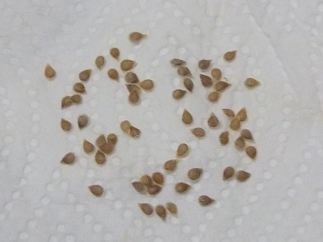
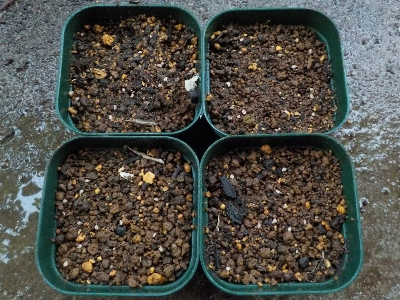
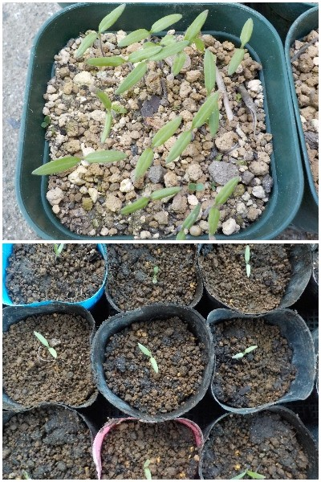
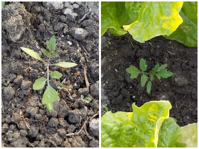
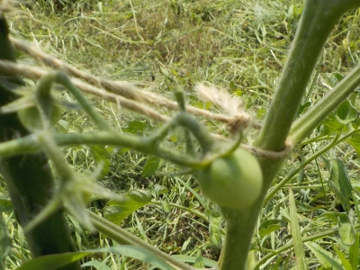
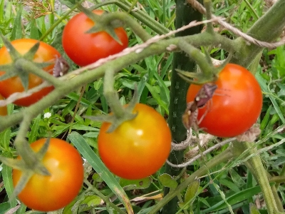

赤く熟れたおつとめ品のミニトマトがあったので買いました。
更新日 : 2026/05/18

おつとめ品だけど傷んでないトマトがあったので買いました。熟れすぎてるので張りがなく、おつとめ品らしい商品でした。トマトはフレッシュなモノがいいなと実感しました。
熟れてるのでタネ蒔いたら育つと思い、タネを収穫しました。
タネに付いてるゼリーっぽいのを手の上で転がしながら取ったんですが、手が水分をドンドン吸収するのが見て分かりました。人の体って面白いって思いました。
更新日 : 2026/05/18

おつとめ品だけど傷んでないトマトがあったので買いました。熟れすぎてるので張りがなく、おつとめ品らしい商品でした。トマトはフレッシュなモノがいいなと実感しました。
熟れてるのでタネ蒔いたら育つと思い、タネを収穫しました。
タネに付いてるゼリーっぽいのを手の上で転がしながら取ったんですが、手が水分をドンドン吸収するのが見て分かりました。人の体って面白いって思いました。
更新日 : 2026/05/21

実生の種蒔きって発芽するか分からないのでドキドキしていいですね。
遊んで楽しんでる感じがして好きです。
更新日 : 2026/05/31

思ってたより大量に発芽しました。
一つのポットで沢山発芽したら、大きい苗を残して他の苗はハサミで切り取ってしまうのがいいそうです。
本当にそんなことしているのかな？苗を捨てるのがもったいないので、コツコツ植え替えしました。
今日はポットを10個くらい作りました。もういらないかな。でもまだ沢山苗あるから残りは気がむいた時に地植えしようかな。
更新日 : 2026/06/12

苗はまだ大きくなっていないですが、ポットよりも地植えの方が育つのが早いだろうと思い地植えにしました。
日向に植えたり、サンチュの隙間に植えてみました。真夏の雨で枯れない苗に育って欲しいと思っています。
今の時期だと、この苗よりも脇芽を水差しして根っこを出させたものの方が大きいですね。効率を考えたら脇芽なんでしょうけど、これは遊びなのでこれでいいかな。
更新日 : 2026/07/19

トマトの小さいのが出来ていました。どんな大きさになるかは不明ですが、来月中には食べれそうですね。
暑さに負けないで、枯れずに育って欲しいです。
更新日 : 2026/08/15

もうちょっと赤くなってから食べるつもりでしたが、カメムシが寄って来てたので食べることにしました。
近くにミントやシソがあって香りでカメムシは嫌がるのでは？って思ったんですが効果なかったです。
皮は張りがあったけど薄いので食べやすかったです。色が薄いし雨が降ったせいか、みずみずしい感じの美味しいトマトでした。
これからしばらく、この兄弟苗のミニトマトが食べれそうです。
食べ物からタネを採ったとしても、普通に苗は買います。